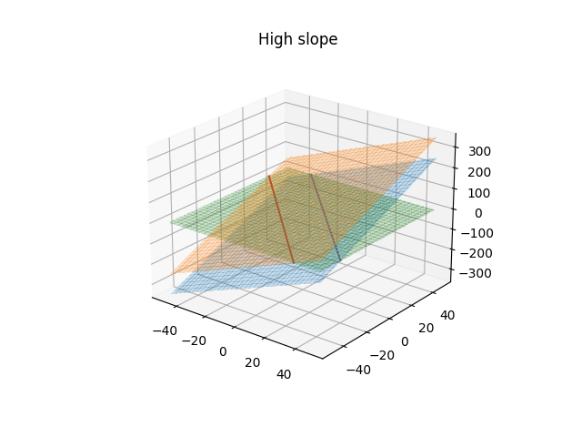

Support Vector Machines (SVMs)
What is a support vector machine?
A support vector machine is a model which attempts to fit 1 or more hyperplanes to an input set of features in order to separate out that feature space into the appropriate classes. The definition of the what input features go into which classes is based on the intersection of the hyperplanes with the input feature space which define decision boundaries. The purpose of the SVM is to maximize the distance between these decision boundaries and the closest correctly predicted input vectors. These closest examples are called the support vectors and the distance between them and the decision boundary is referred to as the margin. So how do we define these hyper-planes?
Defining a hyperplane
To start with, we define a simple model for a classification or regression scenario:
$iny(x) = W^{T}\phi(x) + b $in
Here, x is an input feature vector and y is the predicted class or value associated with that input vector and W, b, and $in\phi$in define the mapping of the input feature to the prediction. Specifically, $inW$in is a weight matrix, b is a bias, and $in\phi$in defines some features space transformation. $in \phi $in is important as if your data is not linearly separable in the current feature space then it could be transformed, through $in \phi$in into a domain where they are linearly separable. Note that we usually define a kernel rather than the transformation itself, where $in \phi(x)^{T}\phi(x) $in is defined as the kernel, $in k$in.
Note that if this feature space transformation is a linear pass through such that $in\phi(x) = x$in, then the weight vector defines a hyper-plane in M-dimensions and the bias term defines the offset of this plane from the origin. For example. if your input training data has 2 features then the weight vector and bias define some 2D plane. Where that extra dimension of the plane (essentially the y value here) equals 0 then the plane intersects the plane of the input features and creates a decision boundary. Of course, there might be very many decision boundaries which adequately fit your data but we should choose the one that maximally separates out the classes.
You can skip to the implementation of a support vector machine here. It isn't necessary to understand support vector machines at the theoretical level in order to implement them, but it can help in understanding some of their advantages and limitations and just what exactly a kernel is. If you are interested then please read through the next section.
Defining the problem to optimize
We'll start with a classification problem defined by the above equation where we have true labels,$in t$in, for the data, $in x$in, the predictions of the model are still given by $in y(x)$in. If we define that values of $iny\gt1$in belong to class 1 and those $in \lt-1$in belong to class -1 then this creates a margin around the decision boundary based on when $in y=1$in and $in y=-1$in, which is in turn based on the weight vector and bias. Assuming a linear transformation kernel, $in\phi$in, then the weight vector represents the slope of the the hyper-plane and the smaller the slope the larger that margin around the decision boundary will become, which is easier to see in the following plots.
We want to maximize the distance of each point from the decision boundary subject to the classes being correctly predicted and we'll further assume that they are linearly separable for now. The prediction is correct when the value, $iny(x_{n})$in, is of the same sign as the true label. The distance of any vector, $in x $in from the plane where of $in y(x) = 0$in is given by $in \frac{y(x)}{||W||} $in, but as previously mentioned we are only interested in when the prediction is correct, or $in \frac{t_{n}y(x_{n})}{||W||}$\gt0$in. If we state that we don't want our margin to be violated then all the products of the true label and the prediction must be greater than greater than 1. We can also replace the form of $in y(x_{n}) $in here with the equation above to arrive at the following inequality
$in \frac{t_{n}(W^{T}\phi(x) + b)}{||W||}\gt1 $in
Note that for the closest points, the support vectors. The value of $in t_{n}y(x_{n}) $in will be 1 by definition. Such that optimization problem becomes one of maximizing $in \frac{1}{||W||}$in with the constraint that $in t_{n}(W^{T}\phi(x) + b)\gt 1 $in. This is equivalent to minimizing $in ||W||^{2} $in with the constraint and is a quadratic constrained optimization problem that can be solved with the method of Lagrange multipliers. Our optimization problem then becomes:
$in \underset{w,b}{\mathrm{argmin}} ||W||^{2}$in subject to $int_{n}(W^{T}\phi(x) + b)\gt1$in
We won't go into details of solving problems with the Lagrange multiplier method but if you are curious then you can check out chapter 7 in Christopher Bishop's book Pattern Recognition and Machine Learning or Robert Berwick's lecture notes here.
Although we won't go through the derivation, we will note that the equation that is to be maximized, derived through the use of the Lagrange Multiplier methods:
$in\displaystyle\tilde{L}(a) = \sum_{n=1}^{N} a_{n} - \frac{1}{2} \sum_{n=1}^{N}\sum_{m=1}^{M}a_{n}a_{m}t_{n}t_{m}k(x_{n}, x_{m})$in
with the constraints
$ina_{n} \ge 0$in $inn=1,..,N$in
$in\displaystyle\sum_{n=1}^{N}a_{n}t_{n} = 0$in
The function $in \tilde{L}(a) $in is to be optimized with respect to a where $in a_{n}$in and $in a_{m}$in are the Lagrange multiplier parameters. $ink $in is the kernel function which is defined as $in \phi(x)^{T}\phi(x) $in.
The kernel functions themselves define the transformations to be applied to the input feature vectors in order to help to linearly split out different classes in the transformed domain.
Implementing an SVM solution
Let's implement a simple SVM classifier using some toy datasets to help better understand the impact of using different SVM kernel functions. Here we'll follow the script for testing various SVMs as outlined here but we'll use test data similar to what is found in the tensorflow playground (the code to produce the datasets used by the playground is here but there is also a python version in the jupyter notebook in the github repository). We have four datasets to test on SVm models on, all of which have 2 classes:
- 2x2D Gaussian distribution of points with offsets means
- Two spirals offset offset in their starting trajectory from the origin
- An XOR like dataset where one class exists in the 1st and 3rd quadrant and the other class exists quadrants 2 and 4
- A dataset in which the classes are separated by their radial distance from the origin
We'll use sci-kit learn to test the SVM application to the test data and utilize four different SVM kernels. We'll use a sigmoid, RBF, linear, and 3rd order polynomial kernel. More details about the kernels can be found on the sci-kit website here. First, we'll import the necessary libraries and instantiate the SVM models.
from sklearn import svm
from sklearn.base import clone
from sklearn.inspection import DecisionBoundaryDisplay
import matplotlib.pyplot as plt
C = 1.0 # SVM regularization parameter
noise = 0.2 # noise parameter (affects different ways to different datasets)
models = {"SVC with sigmoid kernel": svm.SVC(kernel="sigmoid", C=C),
"LinearSVC (linear kernel)": svm.LinearSVC(C=C, max_iter=10000, dual="auto"),
"SVC with RBF kernel": svm.SVC(kernel="rbf", gamma=0.7, C=C),
"SVC with polynomial kernel": svm.SVC(kernel="poly", degree=3, gamma="auto", C=C)
}Next we get or import our data (the function isn't given here but follows the tensorflow playground training set tensorflow playground)
datasets = {"2 Guassians":getGaussianDataset(noise=noise),
"XOR": getXORDataset(noise=noise),
"Spirals": getSpiralDataset(noise=noise),
"Circles": getCircleData(noise=noise)
}Next, we loop over the models and data sets to fit the model to each dataset in order to compare the performance.
models_fitted = []
for dataset_key, dataset_value in datasets.items():
for model_key, model_value in models.items():
model_value.fit(dataset_value[0], dataset_value[1])
models_fitted.append({'model name':model_key, 'dataset name': dataset_key, 'model': model_value})
# reset the model ready to be fit on the new dataset
models[model_key] = clone(model_value)Finally, we plot the results.
# Set-up 4x4 grid for plotting.
fig, sub = plt.subplots(4, 4, figsize=(15, 15))
plt.subplots_adjust(wspace=0.3, hspace=0.3)
count = 0
for model, ax in zip(models_fitted,sub.flatten()):
disp = DecisionBoundaryDisplay.from_estimator(
model['model'],
datasets[model['dataset name']][0],
response_method="predict",
cmap=plt.cm.coolwarm,
alpha=0.8,
ax=ax
)
X0 = datasets[model['dataset name']][0][:,0]
X1 = datasets[model['dataset name']][0][:,1]
y = datasets[model['dataset name']][1]
ax.scatter(X0, X1, c=y, cmap=plt.cm.coolwarm, s=13)
ax.set_xticks(())
ax.set_yticks(())
if count in [0,4,8,12]:
ax.set_ylabel(model['dataset name'], fontsize=16)
if count in [0,1,2,3]:
ax.set_title(model['model name'], fontsize=16)
count += 1It is clear that the RBF kernel function performs well on input features with multiple different dynamics and the the linear kernels are limited to solving problems which are in some way linearly separable in the input feature vectors. This explains why the default kernel option for the SVM package in sci-kit learn is the RBF kernel.
This isn't to say that the RBF kernel is without fault. As can be seen by the example of two offset Gaussian clusters, the RBF kernel often fails to extrapolate well, especially when the data is somewhat linearly separable. This is a lesson not just for support vector machines but in general; Always choose the appropriate model for your data. A simple statement but a difficult task. But hopefully the previous plot will help you decide, if you choose to use support vector machines, which kernel to use.
One thing that would drastically alter the performance of some of these kernels, which hasn't been applied here, is feature engineering. For instance, in the "circles" example, it might be that using the feature $inx^{2} + y^{2}$in would allow the data to be linearly separable and a linear kernel for the SVM then can then be used. Or similarly in the XOR example dataset using the feature $in xy$in could provide linear separability, highlighting the importance of not only the kernel choice but feature engineering also.